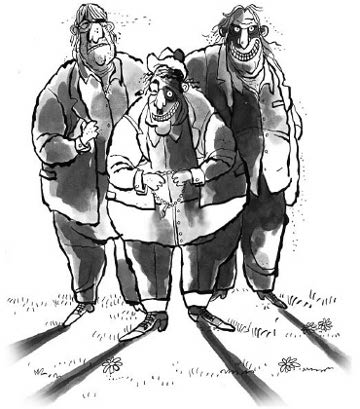

— Bu kitap da ne ki böyle?
Karşılarında tıknazca bir adam duruyordu. Adamın ince bıyığının altından parıldayan altın dişi görünüyordu ve yandan uzattığı saçıyla kelini kapamaya çalışmıştı. Arkasında hiç konuşmadan duran iri yarı, iki sarışın adam vardı. Öndeki, takım elbisesinin içinde, pirinci fazla gelmiş zeytinyağlı patlıcan dolması gibi duruyordu; kollar sarkmış, göbeği yeleğinin altından dışarı taşmış, pantolon paçaları da kısaydı.
